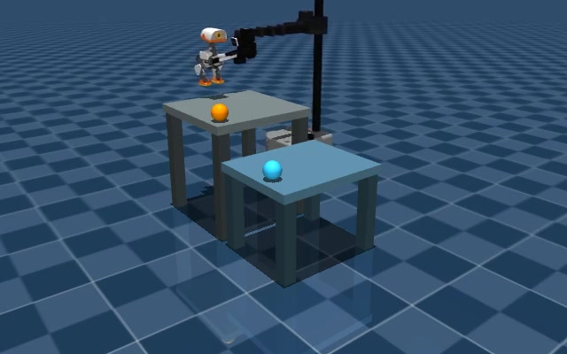

01 / Truck–Drone
地面与空中，各展所长。
车辆沿道路移动，无人机从空中接近目标。让两者在合适的位置会合，就有了协作的可能。
CarlaAir 仿真画面，展示地空移动与会合。巡检在当前演示中以稳定停留表示，不包含视觉识别。
这个场景在探索什么 ↗AOR · 异构机器人协作
会走、会飞、会搬运。
当能力不同的机器人遇到一起，
怎样把一件事做得更好？
AOR = Autonomous OR
OR 是运筹学（Operations Research）：用数学方法帮助做选择。AOR 研究如何安排不同机器人的分工、路线与行动时间，让它们更好地协作。

IN SIMULATION / 仿真里的协作
三个场景，三种互相帮助的方式。
点击播放，每段不到一分钟。
01 / Truck–Drone
车辆沿道路移动，无人机从空中接近目标。让两者在合适的位置会合，就有了协作的可能。
CarlaAir 仿真画面，展示地空移动与会合。巡检在当前演示中以稳定停留表示，不包含视觉识别。
这个场景在探索什么 ↗02 / Vehicle–H1
近处的任务可以步行完成；距离更远时，移动平台可以提供帮助。但等待和换乘也需要时间。
Isaac 仿真画面。步行由已有机器人策略驱动；搭乘使用位置跟随代理，尚未验证真实上下车与乘坐物理。
这个场景在探索什么 ↗03 / Stretch–MicroDuck
一个擅长搬运，一个能够在台面上行动。Stretch 抓住并抬起小机器人，将它送到新的工作位置。
MuJoCo 接触物理演示。MicroDuck 步行带有平面辅助；演示仍由脚本组织，尚未接入 AOR 的协作优化流程。
这个场景在探索什么 ↗THE QUESTION / 研究方向
我的研究背景是多式联运。
我希望把对移动方式、换乘与协作的思考，带到机器人之间。
谁来做？在哪里会合？什么时候行动？AOR 用运筹优化研究这些选择，让已有的机器人能力更好地配合。
这是从多式联运走向机器人协作的研究设想。City2049 是长期愿景，AOR 是其中的一步。
FIELD NOTES / 知识小笔记